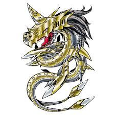

어릴때 봤던 디지몬 어드벤처. 이 애니메이션은 방게더에서 보지 않으셨던 분은 없다고 생각합니다.(있다면... 음...미안합니다.)
이 애니 후반부에 가면 '디지몬 사천왕'이 등장합니다.
(왼쪽부터 피노키몬, 메탈 시드라몬, 피에몬, 파워드라몬. 위엄이 쩐다. 어릴때보고 무서웠을정도. 잘 보니 피에몬이랑 교수님이랑 좀 닮았을지도)
이 4마리는 나루토로 치면 아카츠키, 헌터x헌터로 치면 환영여단으로 볼 수 있습니다.
어쨌든 이 4마리 디지몬 중 용같이 생긴 '메탈 시드라몬'이 있습니다.

궁극체 디지몬으로 엄청 크고 포스도 있었습니다.

이 메탈 시드라몬이 쓰던 기술 기억나십니까?
코에서 레이저를 발사하는 기술.
원작에서의 기술명은 '아루티메토 스토리무(얼티밋 스트림)'으로 이름조차도 엄청나게 멋있습니다.
근데 모두 아시다시피 한국에서는?
??
??
네 다시 봐도 야랄입니다.
다들 기억하고 계시겠지만 네. '용의 콧물' 로 번역을 해놨습니다,
번역 하나로 폼 나는 캐릭터에서 콧물 흘리는 맹구 캐릭터로 만들어놨습니다. 어릴땐 그냥 그런가보다... 했는데 지금보니 정말 개판이더라구요.
메탈 시드라몬의 기술이 [용의 콧물]이고 메탈 가루몬의 기술이 [콜드 개그포] 또는 [추운포]... (정확한 한국명은 썰렁포)
도대체 뭔 기술이냐!? 하마터면 기가 시드라몬의 기술이 [용의 가래]가 될 뻔 했다고!?
디지몬 캐릭터 디자이너조차 경악을 할 정도의 발번역입니다.
디지몬 디자이너가 충격받은 두번째 발번역은 메탈 가루몬 기술입니다. 방게더 분들도 모두 아실 것 같습니다.
이렇게 멋있었던 메탈 가루몬 기술마저...
이 기술인데 원작에서는
코큐토스 브레스로 설정도 이름도 멋집니다. 근데 한국에서는?
'썰렁포'
......

(피노키몬을 죽인 이 기술의 이름이...)
네 디지몬 투탑 네이밍 센스답게 미쳤습니다.
어릴때도 좀 이상했는데 커서 봐도 이상합니다.
후원댓글 15개
댓글 15개 ▼